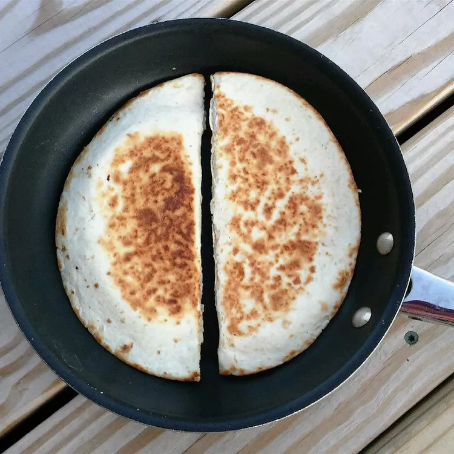

Quesadillas

Description
This recipe reduces the classic quesadilla to its essential ingredients. It's the perfect appetizer for when you are low on ingredients
or time. Even in this simplified state, its rich and cheesy profile makes it seem like a luxury.
Ingredients
- flour tortilla
- bag of shredded mozzarella cheese
- deli sliced ham
Steps
- Heat up a pan on a low flame.
- Apply an individual tortilla once the pan is somewhat hot.
- Wait until the tortilla softens up and turns white. Don't wait too long or the tortilla will harden!
- Do this step quickly! Once it's white, flip the tortilla to the other side. Now apply a slice of ham on the tortilla. Then, sprinkle a handful
of cheese from your bag. Finally, fold the tortilla in half.
- Once the bottom side gets brown spots, flip it to the other side. Cook the other side until it also gets brown spots. Once both sides are cooked, you are done!
Home